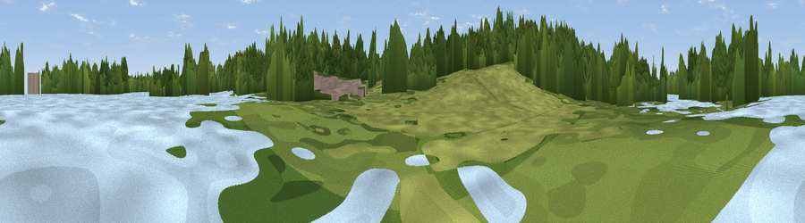

Viewpoint near Theale
#45171 in England · top 88% of its area beats it · near ThealeThe view, rendered

A 360° render of this exact spot computed from the terrain model, tree cover and land cover — summer colours, afternoon light, calibrated against photographs of famous viewpoints. Real trees, hedges and buildings will differ in detail.
The panorama
Grey silhouette: terrain skyline in each direction (720 bearings, Earth curvature and refraction included). Dashed green: skyline with trees (+15 m) and buildings (+8 m) as obstacles. Blue strip: how far the ground is visible on each bearing.
Where the view opens
Wedge length = distance to the farthest visible ground on that bearing (vegetation-aware). Rings at 10, 25 and 50 km.
What fills the view
48% woodland · 31% grassland · 13% water · 4% cropland · 4% built-up
Angular shares of the visible panorama (visual magnitude), not map area. Landscape diversity 0.54 (0–1 Shannon).
Key numbers
More beautiful places nearby
The staircase of upgrades: each row has a higher view potential than everything closer. Driving times are estimates from straight-line distance, calibrated against real road routing — check an actual route before setting out.
| Place | Direction | Drive | Score |
|---|---|---|---|
| Viewpoint near Theale | NE · 0 km | ~1 min | 22.6 |
| Hermit's Hill | SE · 2 km | ~6 min | 31.8 |
| Viewpoint near Theale | NNE · 3 km | ~8 min | 48.1 |
| Viewpoint near Whitchurch-on-Thames | N · 8 km | ~17 min | 55.0 |
| Viewpoint near Streatley | NNW · 12 km | ~23 min | 56.7 |
| Viewpoint near Streatley | NNW · 13 km | ~24 min | 57.3 |
| Viewpoint near Moulsford | NNW · 15 km | ~27 min | 58.8 |
| Viewpoint near Compton | NW · 17 km | ~29 min | 64.1 |
51.42142, -1.07083 · source: osm viewpoint · position refined by local search. Computed location — check access rights before visiting.